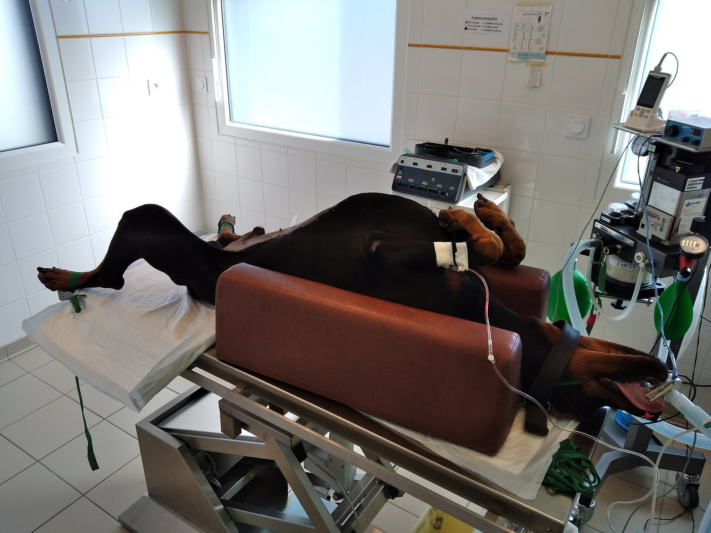
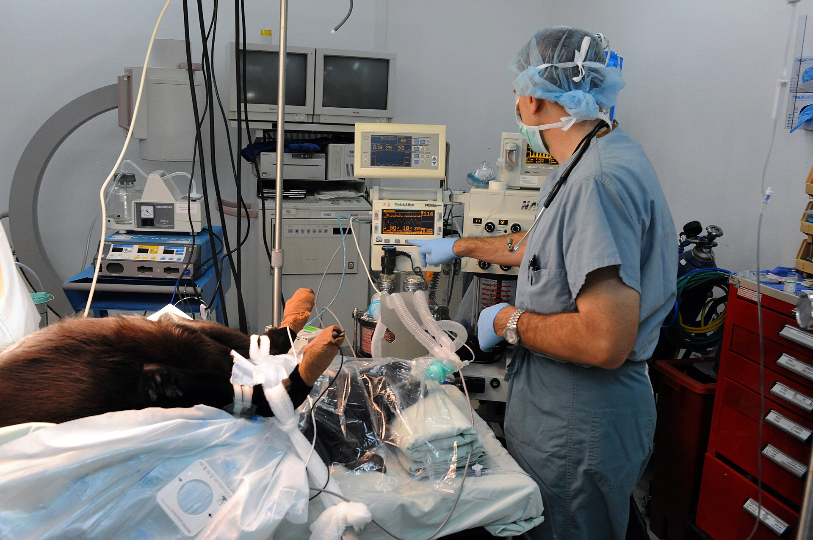
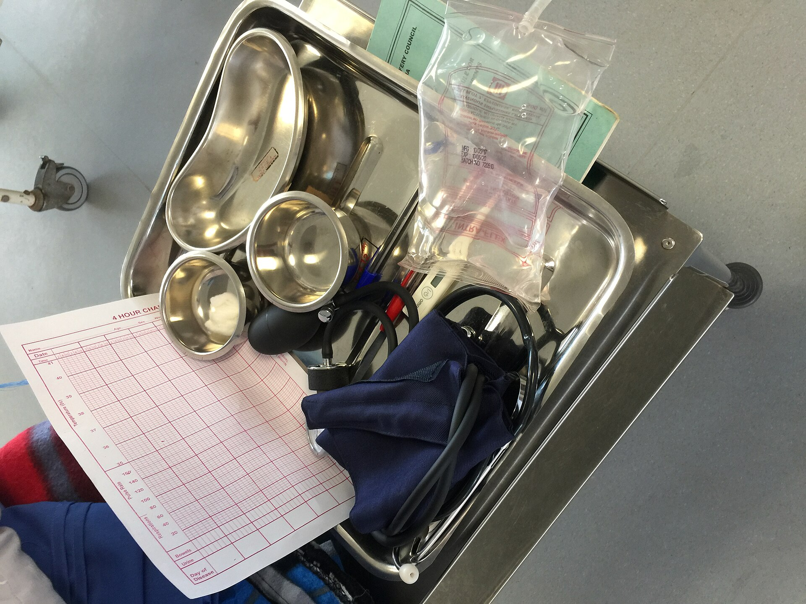
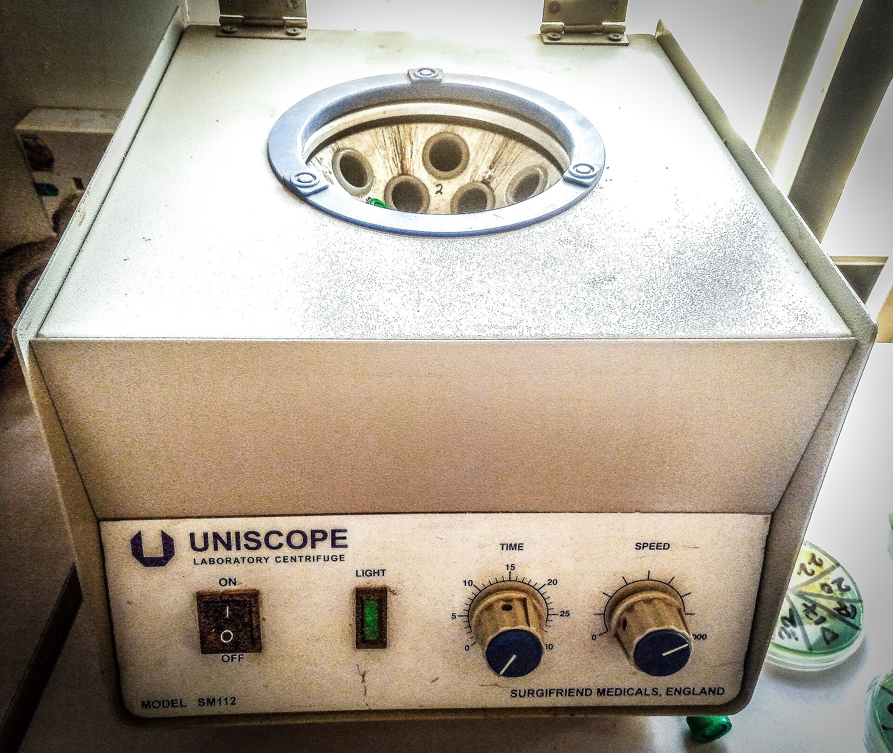

Andnöd eller blåa slemhinnor
Blå eller grå färg i munnen, rosslande andning eller en hund som står med sträckt hals. Kom in direkt. Kör du själv, ring jourlinjen under färd så vi möter upp vid dörren.
Jourlinjen på Klinikvägen 12 är bemannad dygnet runt, alla dagar på året. Ringer du före klockan 22 svarar en djursjukskötare i receptionen, efter 22 svarar jouren. Du behöver ingen bokad tid och ingen remiss. Har du djurets vaccinationsintyg hemma, ta med det.
Ring innan du sätter dig i bilen. Då gör vi i ordning undersökningsrummet, kopplar fram syrgas vid behov och säger till om det finns något du ska göra på vägen in. Telefonen besvaras av en djursjukskötare med akututbildning, inte av en växel.

Klockan är — i Stockholm
Den ifyllda timmen i baren är den aktuella. Mottagningen har öppet mån–fre 08–18 och lör 09–14. Övrig tid svarar jourlinjen, och mellan 22 och 07 är det jouren som tar telefonen, inte receptionen.
Akuta symtom
De sex lägena nedan bedömer vi som akuta och tar emot samma timme. Är du osäker, ring och fråga. En telefonbedömning tar 40 sekunder och kostar ingenting.
Blå eller grå färg i munnen, rosslande andning eller en hund som står med sträckt hals. Kom in direkt. Kör du själv, ring jourlinjen under färd så vi möter upp vid dörren.
Tryck med en ren kompress i tio minuter utan att lyfta på den. Sipprar det fortfarande genom kompressen, eller kommer blod ur nos eller mun utan sår, åk in.
Ett anfall som pågår längre än två minuter, eller flera anfall i följd. Håll undan möbler och lägg ingenting i munnen. Ring oss medan anfallet pågår så räknar vi minuterna tillsammans.
Choklad, xylitol, råttgift, sömnmedel och vissa krukväxter. Ta med förpackningen. Har det gått mindre än två timmar kan vi behandla innan giftet hunnit tas upp i kroppen.
En hankatt som trycker utan att det kommer något, jamar eller slickar sig under svansen. Det här är akut även om katten ser pigg ut. Vänta inte till morgonen.
Hunden vill inte ligga ner, kräks utan att något kommer upp och buken är hård som en trumma. Vid magomvridning behöver vi operera inom några timmar.
Vid dörren möts du av en djursjukskötare som redan fått din beskrivning i telefon. Är djuret i dåligt skick tas det in i undersökningsrummet direkt, förbi väntrummet, och du följer med in.
Veterinären känner igenom djuret, lyssnar på hjärta och lungor och tar de prover som läget kräver. Röntgen och laboratorium ligger i samma hus, så ingen tid går åt till transporter.
När den första bedömningen är klar sätter vi oss ner med dig. Då får du veta vad vi tror och vad vi vill göra härnäst. Innan något startar får du en skriftlig kostnadsuppskattning.
Ingen åtgärd över 3 000 kr sätts igång utan en skriftlig uppskattning på papper. Vi ringer också innan vi går över den summa vi har kommit överens om.

Flödet i huset
Fyra steg, samma ordning varje gång, oavsett om klockan är 14 eller 03.
Djursjukskötaren ställer fyra frågor: vad har hänt, hur länge har det pågått, hur andas djuret och kan det stå och gå? Svaren sätter prioritet direkt, utan köplats.
Du går förbi väntrummet. Journal och försäkringsuppgifter tar vi medan veterinären undersöker, inte innan. Räkna med att vara i rummet inom fem minuter efter att du kommit in.
Veterinären bedömer andning, puls och buk, och gör röntgen eller blodprov vid behov. Medianväntetiden från ditt samtal till undersökning är 31 minuter.
Vi behandlar på plats när vi kan, och 78 % av fallen avslutas i huset. Behövs intensivvård över natten stabiliserar vi djuret, ringer djursjukhuset och skickar med remissen i din hand.
Jourjournal
Siffrorna är räknade på klinikens egna jourjournal och avser helåret 2025.
akutbesök under året. Fyra per dag i snitt, flest mellan 18 och 22 på kvällen.
medianväntetid från samtal till undersökning. Nio av tio akutfall undersöks inom 45 minuter.
av akutfallen löses på plats i huset, utan remiss vidare till djursjukhus.
remitteras vidare, oftast för intensivvård över natten eller avancerad ortopedi.
Källa: klinikens jourjournal 2025, 1 480 registrerade akutbesök. Siffrorna uppdateras en gång per år.
Utrustning
Rummen på Klinikvägen 12 är bemannade alla timmar på dygnet. Vi kan röntga, operera och analysera blod utan att skicka djuret vidare.
Operationssalen har övervakning av andning, hjärtfrekvens och syremättnad på skärm. Sterila instrument ligger färdiga i förrådet intill, så vi behöver inte vänta på en leverans när ett bukintrång kommer in klockan 03.
Syrgas, infusionspumpar och värmebäddar finns i två rum samtidigt. Kommer två akutfall samma kväll kan vi ta emot båda utan att någon behöver vänta i bilen.


Laboratoriet ligger vägg i vägg med undersökningsrummen. Vid akutprioritering får vi svar på blodstatus, levervärden, njurvärden och elektrolyter inom 20 minuter. Vid misstänkt förgiftning går koagulationsproverna före allt annat.
Provrören centrifugeras på plats i stället för att skickas med bud. Det sparar mellan 40 och 90 minuter jämfört med ett externt labb, tid som räknas när djuret är kritiskt.
Vanliga frågor
Fem frågor vi får varje vecka, med samma svar som vi ger i telefon.
Ja. Mellan 22 och 07 samt på söndagar är det jourtaxa. Ett akutbesök kostar då från 1 950 kr i stället för 1 450 kr. Undersökning, bedömning och första behandling ingår i båda summorna. Röntgen och operation tillkommer och prissätts innan vi börjar.
Nej. Du kan ringa jourlinjen direkt och komma in utan bokad tid. Har djuret varit hos en annan klinik tidigare samma dag, säg det i telefon. Då begär vi journalen medan du åker in, så vi slipper göra om prover som redan är tagna.
Håll djuret varmt, stilla och i sele eller bur. Ge ingenting att äta eller dricka om det kräks. Blöder ett sår lägger du en ren kompress över och trycker i tio minuter utan att lyfta på den. Är djuret medvetslöst, kör in direkt och ring under färd.
Ja. Katten har eget undersökningsrum med stängd dörr, avskilt från hundarna. Vi tar emot i snitt 18 akuta kattbesök i månaden, flest för urinstopp hos hankatter. Kommer du in före klockan 22 har vi också en djursjukskötare ledig i receptionen.
Då stabiliserar vi djuret och ringer djursjukhuset medan du är kvar hos oss. Du får remissen och namnet på en veterinär där, inte bara ett telefonnummer. Transporten ordnar du själv. Vill du ha sällskap ringer vi åt dig innan du åker.
Ring jourlinjen och beskriv vad som hänt. Vi svarar dygnet runt och säger till om du ska komma in direkt eller avvakta en timme hemma.